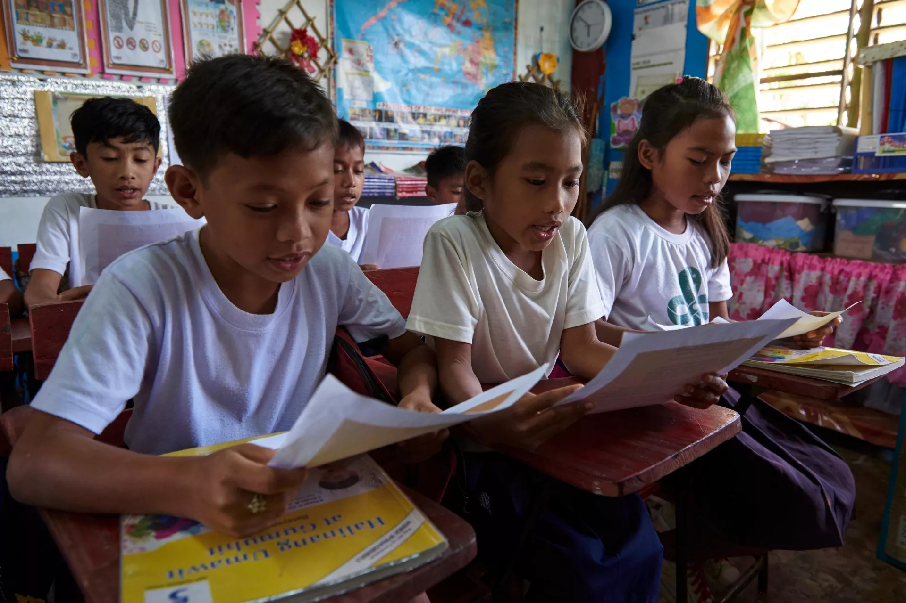
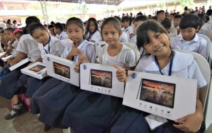

Breaking Barriers to Quality Education
EqualEd is committed to unlocking educational opportunities for all children, regardless of their background or circumstances. We believe every child deserves access to quality education.
Our Purpose
EqualEd works to bridge the educational gap in underserved communities by providing resources, technology, and support to both students and educators. Our mission is to create a world where every child has the tools they need to succeed academically and beyond.
Importance of Education
Education is the foundation for personal development and future success. It empowers individuals, strengthens communities, and drives economic growth. Despite its importance, millions of children worldwide still lack access to quality education due to various barriers.
The Global Education Crisis
Access to quality education is still one of the largest problems worldwide. UNESCO (2023) reports that more than 244 million children and young people are not in school worldwide, where the majority reside in sub-Saharan Africa and South Asia. Poverty, improved health, and sustainable development directly correlate with quality education. Without suitable educations, millions of young minds cannot achieve their full potential, creating cycles of inequality and stifling economic growth within their communities.
Education inequality is also a cause for concern in the Philippines. A World Bank report (2021) noted that 9 out of 10 Filipino children at the age of 10 could not read or understand basic text. The learning inequality was reinforced by the COVID-19 pandemic, with great losses in literacy and numeracy cited by the Department of Education (DepEd, 2022). There remains a shortage of internet connectivity and learning materials in distant and poor areas that continues to hinder learning for students.
Key Statistics on Education Access
| Region/Country | Out-of-School Children | Primary Completion Rate | Literacy Rate (Ages 15-24) |
|---|---|---|---|
| Global | 244 million | 85% | 91% |
| Sub-Saharan Africa | 98 million | 69% | 76% |
| South Asia | 85 million | 88% | 88% |
| Philippines | 2.9 million | 92% | 98% |
What's Being Done About It
The Philippine government and non-governmental organizations have instituted various programs to provide equal education. The K-12 program was embraced to improve the quality of the curriculum and prepare students for college and the workforce (DepEd, 2016). In 2018, the Alternative Learning System (ALS) was increased to provide out-of-school youth and adults with basic education equivalency opportunities (DepEd, 2019).
Apart from this, other entities such as Teach for the Philippines and Save the Children continue to provide learning materials, teacher training, and advocacy for inclusive learning processes. In 2022, it also opened its Digital Rise Program to advocate digital literacy through channels of free online learning materials and the distribution of technology to learners and teachers.
Where EqualEd Comes In

EqualEd bridges the gap between existing government programs and grassroots communities by establishing mobile learning centers and digital literacy hubs in underserved areas. We work directly with local communities to identify specific educational needs and provide targeted support through volunteer teachers, technology resources, and community engagement programs that complement existing government initiatives while ensuring no child is left behind.
Join the Movement for Educational Equality

Your Action Makes a Difference! Whether you volunteer as a tutor, donate learning materials, or simply spread awareness about educational inequality, every contribution helps unlock potential in young minds. Together, we can ensure that quality education becomes a reality for every Filipino child, regardless of their background or location.